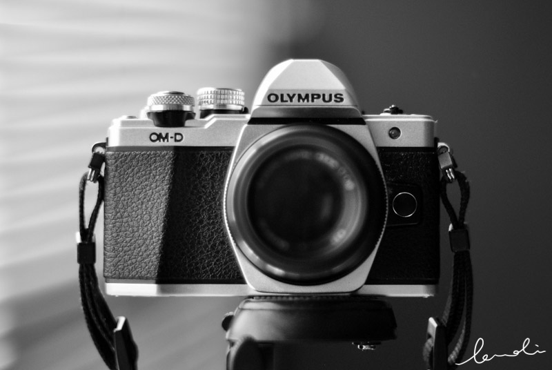

About
Category
Cities
Foods
Flowers
Nature
About

I am using Olympus OM-D EM10 Mark II, a Micro Four Thirds camera that was given by my mom who sparked my interest in taking photos. Lenses:
Olympus M.Zuiko 45mm f/1.8
Panasonic Lumix G 20mm f/1.7 II
Olympus M.Zuiko 14-150mm f/4-5.6 II
Olympus M.Zuiko 75-300mm f/4.8-6.7 II